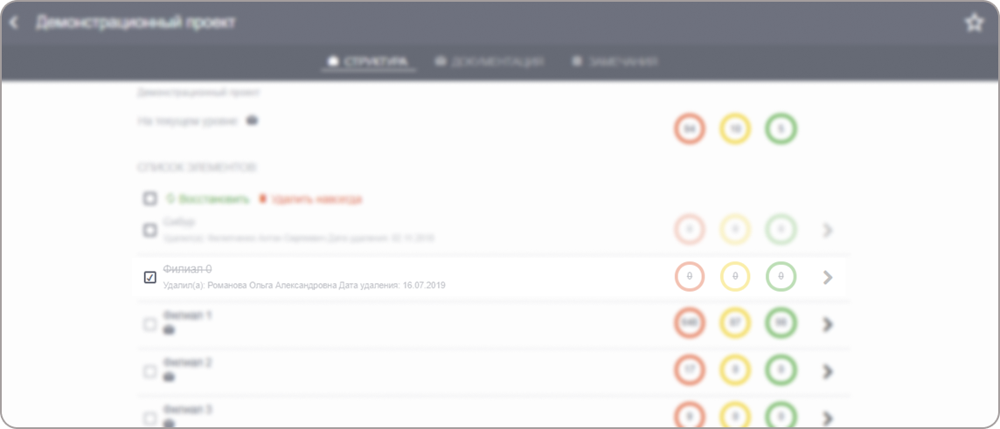
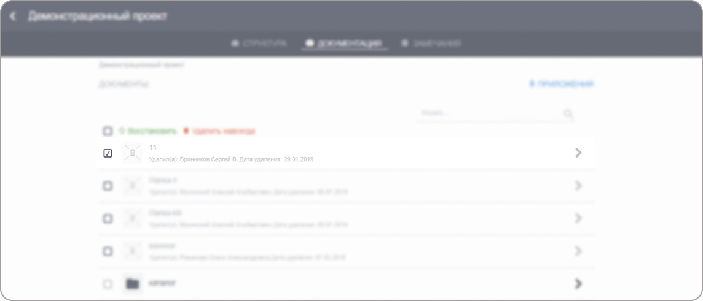
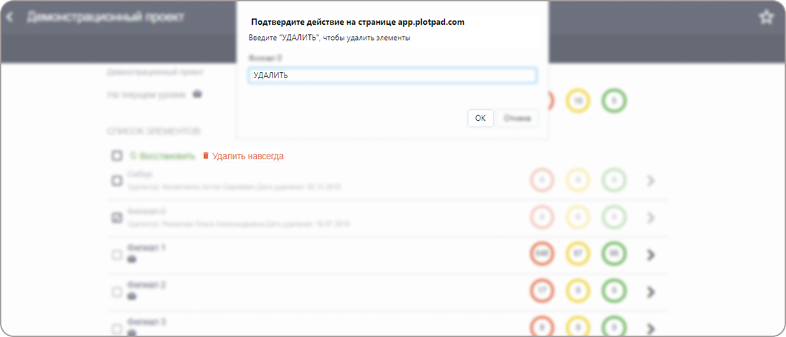

Для восстановления удаленного элемента структуры объекта:
Откройте пункт меню «Проекты», в открывшейся вкладке выберите проект,
структуру которого вы собираетесь восстановить (Рис. 2). Можно воспользоваться поисковой строкой для поиска объекта.
Рис. 2. Список активных и удаленных объектов
Отметьте один или несколько элементов структуры объекта, которые вы собираетесь восстановить (Рис. 3).
Также имеется возможность выделить все элементы объекта — для этого поставьте галочку в заголовке списка рядом с кнопкой «Восстановить».

Рис. 3. Выбор удаленного элемента структуры объекта
Кликните «Восстановить» и подтвердите свое действие во всплывающем окне, нажав «Ок» (Рис. 4).
Рис. 4. Восстановление элемента структуры объекта
Примечание
Восстановление происходит согласно последовательности удалений.
Например, если вы удалите сначала замечание, а потом структурный элемент,
то даже после восстановления структурного элемента, замечания и документ также останутся удаленными.
Их надо будет восстанавливать отдельно.
Для восстановления удаленной документации по проекту:
Откройте вкладку «Документация» внутри объекта. Отметьте один или несколько файлов, которые вы собираетесь восстановить (Рис. 5).
Также имеется возможность выделить все удаленные файлы. Для этого поставьте галочку в заголовке списка рядом с кнопкой «Восстановить».

Рис. 5. Выбор удаленного файла для восстановления
Кликните «Восстановить» и подтвердите свое действие во всплывающем окне (Рис. 6).
Отметьте одно или несколько замечаний, которые вы собираетесь восстановить (Рис. 7).
Также имеется возможность выделить все удаленные замечания. Для этого поставьте галочку в заголовке списка рядом с кнопкой «Восстановить».
Рис. 7. Выбор замечания для восстановления
Кликните «Восстановить» и подтвердите свое действие во всплывающем окне (Рис. 8).
Проекты, объекты, файлы и замечания, которые были удалены и хранятся в архивах программного комплекса,
могут быть удалены из программного комплекса навсегда.
Для удаления структуры объекта навсегда в клиентской части программного комплекса:
Отметьте один или несколько элементов структуры объекта, которые вы собираетесь удалить навсегда из программного комплекса (Рис. 9).
Рис. 9. Удаление структуры объекта навсегда
Также имеется возможность выделить все удаленные элементы объекта. Для этого поставьте галочку в заголовке списка рядом с кнопкой «Восстановить».
Кликните «Удалить навсегда» и во всплывающем окне в текстовой строке напишите слово «Удалить» и кликните «Ок» (Рис. 10).

Рис. 10. Подтверждение удаления структуры объекта
Предупреждение
После этого структура объекта будет удалена из программного комплекса навсегда. При этом все замечания и файлы также будут удалены.
У вас не будет возможности восстановить их.
Для удаления файла/документа навсегда в клиентской части:
Откройте вкладку «Документация» внутри объекта или подобъекта, в котором вы собираетесь удалить навсегда файл или документ,
Отметьте один или несколько файлов/документов, которые вы собираетесь удалить навсегда из программного комплекса.
Также имеется возможность выделить все удаленные файлы. Для этого поставьте галочку в заголовке списка рядом с кнопкой «Восстановить».
Кликните «Удалить навсегда» и во всплывающем окне в текстовой строке напишите слово «Удалить» и кликните «Ок» (Рис. 11).
Для удаления замечания навсегда в клиентской части:
Отметьте те удаленные замечания, которые вы собираетесь удалить навсегда из программного комплекса.
Также имеется возможность выделить все удаленные файлы. Для этого поставьте галочку в заголовке списка.
Кликните «Удалить навсегда» и во всплывающем окне в текстовой строке напишите слово «Удалить» и кликните «Ок».
{kind=link}


{kind=link}
{kind=link}
{kind=link}

{kind=link}

{kind=link}
{kind=link}